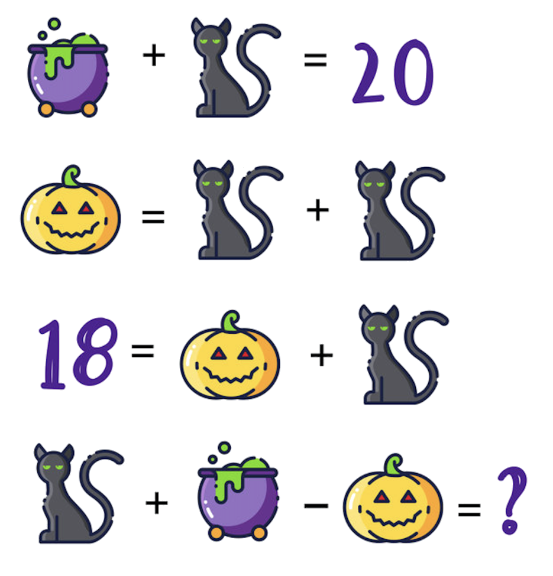
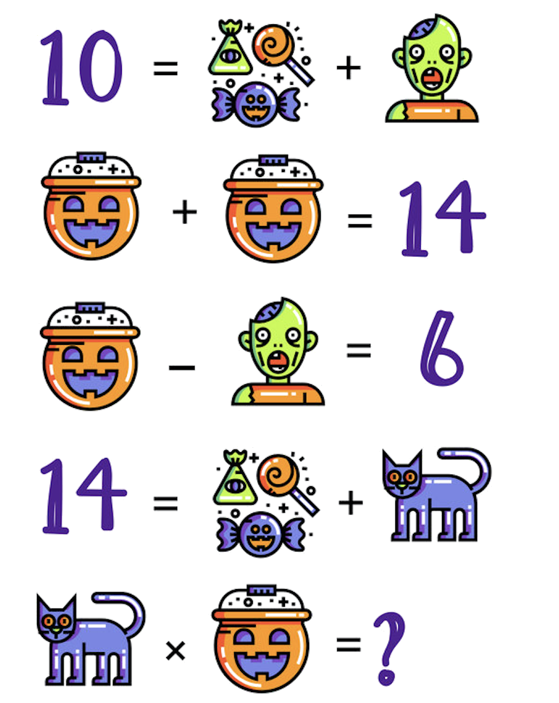

Day 36
Reading
- Finish reading Dracula by Bram Stoker.
- Read Chapters 25-27.
- Take a short quiz on these chapters.
Spelling and Vocabulary
- This vocabulary list is from the novel. Write each word and its definition in your notebook. How many words do you already know? Be sure to study the ones that you don't know.
Writing
- In your notebook or Microsoft Word, write a page about the following topic: Suppose you had the opportunity to travel anywhere you wanted. Write to explain where you would go and why.
Math
- Finish Brain Quest p. 149
- Watch this video to review long division.
- This page explains long division thoroughly. Read through as much as you can. We will review later on!
Art
- Draw Frankenstein.
- Hint: Notice that there are straight lines, arcs, and symmetry in this drawing. Start by creasing your paper in half horizontally and vertically. Then, use a ruler to draw lines and a protractor to draw the arch of his back.
Day 37
Reading
- Read this summary on Dracula by Bram Stoker.
- Take this quiz about the entire novel.
Reading/Writing
- Read two stories from this page. Note: Do not choose ones that you have already read.
- Instead of choosing two of these stories, you may pick two from the collection by Edgar Allan Poe.
- Write a spooky story. Happy Halloween!
Spelling and Vocabulary
- Review the vocabulary list from yesterday.
- Click the link for Practice (above).
- Click the link for Spelling Bee (above).
Math
Spooky Math Challenges!
- Challenge 1: Find values for cauldron, black cat, pumpkin, and question mark.
- Hint: Notice that it takes two black cats to make one pumpkin, so three black cats equal 18!

- Challenge 2: Find values for candy, zombie, pumpkin bucket, cat, and question mark.
- Hint: Start with the bucket-- two buckets equal 14.

- The answers are on this page. Scroll down to "days" 1 and 2. You don't have to complete the rest of these problems.
Day 38
Reading
- New Book: 1984 by George Orwell.
- Read as many chapters as you can. You must complete the reading by next week.
Math
- Complete this math worksheet.
- Copy and work out the problems in your notebook!
- Note that none of the answers will have a remainder.
- Fill in the puzzle. If your answers are correct, then the answers will fit.
Social Studies
- Use your flashcards to learn about the presidents of the United States.
- This week, learn about the first (George Washington) through the sixteenth president (Abraham Lincoln) only.
- Write down the names and dates in office in your notebook.
- Click on each link, and read about each president.
Day 39
Reading
Continue reading 1984 by George Orwell.
Read as many chapters as you can. You must complete the reading by next week.
Math
- Complete Brain Quest p. 150: Step by Step
- Read the "Brain Box" on this page first to review the steps for long division.
Science
- Brain Quest pp. 280-1: Life Cycles
Day 40
Reading
- Continue reading 1984 by George Orwell.
- Read as many chapters as you can. You must complete the reading by next week.
History
- Read this page about the Declaration of Independence.
- Take a ten-question quiz about this page.
- Watch this video on the Declation of Independence, and read the text below it.